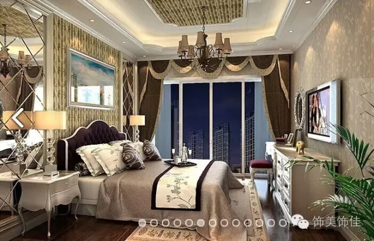

现在的人怎么都在使用集成墙面板装修？
发布时间：2016年10月3日 作者：某某
据调查，若一个导购员推荐集成墙面时，84.5%的消费者是对此产品很感兴趣。其中56%的人想深入了解集成墙面，值得注意的是，有40%家庭装修的人是愿意去使用集成墙面这材料。
“环保”在家装中还是比较受消费者关注的一个话题。然而，集成墙面材料以环保著称！今天饰美饰佳与用户浅谈集成墙面中的竹木纤维集成墙面。
竹木碳纤维集成墙面是由竹纤维、木纤维、高分子防水防火材料和晶石粉在高温高压的情况下压制而成。具有保温、隔音等功能可用在客厅、卧室等地方。

集成墙面具有以下几大功能：
1、安装方便，集成墙面采用传统的扣板安装方式，可以做到直接折弯、对拼和折叠，毛坯墙的安装，普通木工师傅就可以做到，因此装修周期不会很长。
2、款式花色多，环保集成墙面的品种多，花色也多，例如：西欧风格、中式传统、罗马风情、法国烂漫。人们也可以根据个人喜好进行设计和搭配，可以以此来显示出自己的个性。
3、使用期限长，环保集成墙面是以原生态的竹纤维和木纤维为基础材料，用复合环保材料来增强硬度，使其具有抗撞击，耐摩擦等功能，从而具有较长的使用寿命。
环保、耐用、款式多等多种特征，你还有什么理由不选择集成墙面呢？